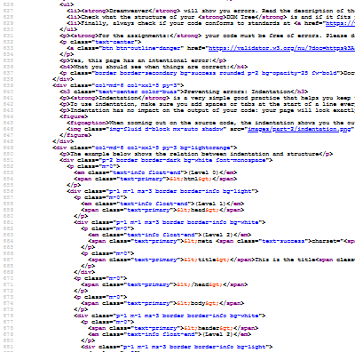

Check the validity of your HTML code and fix it if needed.
Edit, modify and organize images to optimize them for a website.
Contents of this part
This second chapter supports you as you edit your resumé.
You’ll first learn about common HTML elements so you understand the function of each of these building blocks and can add, remove or change parts of your résumé.
Your browser’s developer tools can help you fix errors or draw inspiration from other websites.
We are all humans, and typos happen when writing HTML code. Learn how to recognize, find and fix them by keeping your HTML code clean and a good folder structure.
You then learn how to use hyperlinks to direct your visitors to other pages or sites and to show them images.
Your images will be hosted in your repository alongside your HTML code. The final section teaches you the best practices for resizing and delivering images.
What you need to do
This part of the guide will support you in editing all the content in your resumé and change the images. This includes:
Editing all text content in the page: tagline, schools, job names, etc.
Adding or removing sections, e.g. additional jobs, languages or hobbies
Adding a photo of yourself and the logos of schools and employers.
In doing so, you must follow good coding practices. This includes:
Checking that the structure of your HTML code is still valid after major changes.
Putting your images in the appropriate folders and delivering them alongside your website on GitHub.
Managing your images to ensure a compromise between image quality and page load speed.
Republishing your website and checking that it is working correctly on mobiles.
You don’t need to remember the whole list of HTML elements, but you need to pick the right ones when coding.
Some elements are essential for the structure of the code: <html> <body>, <head>, etc..
Elements can be generic or semantic, and they can be inline or block.
There are 100+ elements, not all are listed here, so check online references.
Previously in this course…
In part 1.5, you’ve already encountered quite a few elements:
<html>, the root element containing everything else.
<head>, which contains metadata about the whole document.
<meta> and <title> which are only found in the head.
<body>, for all the content within the browser frame.
<p>, the paragraph element.
<strong>, which turns its contents bold.
<br>, the line break tag.
You already know that some elements need an opening and a closing tag, for example a paragraph starts with <p> and ends with </p>.
Other elements are self-closing and cannot contain anything. Within the list above, only <meta> and <br> are self-closing, they do not need an end tag.
How many tags are there?
Given the complex history of the HTML standard, you won’t find a universally accepted number, but there are over 100 (yes, one hundred) elements you can use in a web page.
You never need to remember all of them by heart, but you need to be able to identify which element is the most appropriate for your needs.
This is a first list of very common HTML elements (the underlined parts explain what the tag name stands for):
Heading levels 1 to 6: <h1>, <h2>, <h3>, <h4>, <h5> and <h6>
Lists, which exist in two flavours:
unordered lists, a.k.a. bullet points, with the <ul> element
ordered (or numbered) ones, with <ol>
Within either <ul> or <ol>, each list item uses the <li> tag.
<hr> is an horizontal rule. It is self-closing
The most used HTML element on the web is <div>, which is used to create logical divisions within content. <div> is often used in combination with CSS styles (which you’ll learn about in the next part) to group elements visually. This page alone has such div elements.
All these tags, as well as <p> and <br>, have in common that opening them creates a new “block”. This means that you break the flow of the text and move to a new line. This behaviour will become clearer when you compare these with inline tags.
Code:
<h3>Heading 3</h3>
<h4>Heading 4</h4>
<p>This is a paragraph</p>
<div>
<p>Another paragraph inside a div</p>
</div>
<hr>
<ul>
<li>Item in an unordered list</li>
</ul>
<ol>
<li>Item in an ordered list</li>
</ol>
Result:
Heading 3
Heading 4
This is a paragraph
Another paragraph inside a div
Item in an unordered list
Item in an ordered list
“Inline” elements
Here is a second list of elements:
<em>, standing for emphasis and <i>, which both turn your text in italics.
<b>, like <strong>, makes your text bold.
<u> for underline.
<a>, meaning anchor, which is used in hyperlinks with the href (hypertext reference) attribute.
<img>, the image tag, which needs a src (source) attribute to link it to an image file, and an alt attribute to provide a textual alternative. <img> is self-closing.
<span> is also a common, generic way of identifying a span of text
The biggest difference with the first list of tags is that inline ones do not interrupt the flow of text but rather make it continue on the same line.
Code:
<p>
This paragraph contains
<strong>words in bold type</strong>,
<em>words in italics</em> and
<u>also underlined ones</u>.
</p> <p>
This paragraph contains
<span>a span</span>,
<a href="part-1.html">a hyperlink sending you to part 1</a> and the
<img src="images/common/logo-buas.svg" alt="Our logo" width="43" height="14">
BUas logo.
</p>
Result:
This paragraph contains words in bold type, words in italics and also underlined ones.
With over 100 elements, you’ve already noticed that some of them are very similar and what they do. For example:
<b> and <strong> look the same
<i> and <em> also have an identical effect
Alongside <div>, there are several tags that can be used to create a division in the page, e.g. <header>, <main>, <article>, etc.
The difference between these similar tags is called semantics. In other words, each of these tags ascribes a meaning, or a function, to its content.
The rationale behind semantics is that the structure of your HTML page should reflect the structure of your content independently of how your page looks in the browser. This is important for:
Accessibility purposes: Some people rely on screen reading software to be able to access the web. This software will in turn rely on the structure of the page to identify key elements and say out loud what they are.
Search Engine Optimization (SEO): Every search engine ascribes a ranking to determine how relevant a page is with regards to search keywords. This ranking is partly based on whether a keyword appears in relevant parts (e.g. headings). Search engines also rely on the page structure to identify important information like business addresses and opening hours.
Collaboration: Well-structured code that clearly signposts what each part of the page means will be easier for other web developers to read and to work on.
Some tags are considered to be generic, which means that they have no specific structural meaning and are generally used purely for layout and styling purposes. This is the case for <div> and <span>
Example semantic elements
The meaning of semantic tags is defined in the HTML standard:
<header> is used for the introduction to a piece of content.
<nav> defines a section used for navigation purposes such as a menu or table of contents.
<article> is a self-contained piece of content, such as a news article, a blog post, a product entry in an online shop, etc.
<section> is used for an important subdivision of your document such as a chapter.
<footer> is used at the end of a piece of content.
<aside> to introduce indirectly related content.
The structure of your page could for example look like this:
<header>
<nav>
<article>
<aside>
<section>
<footer>
Other elements
We’re still far from the 100+ elements we mentioned at the start. Some elements that you may use for the purpose of your assignment include:
Media elements, such as <audio> and <video> can be used to embed media.
Another way to access the Developer Tools is to choose an element within your page, then Right-Click on it and choose “Inspect” in the contextual menu that appears. Why not try it here?CONGRATULATIONS! You've found hidden content!
What is in Developer Tools?
The Developer Tools is divided in several tabs (which might be labeled differently depending on browsers):
Console is generally used to work with JavaScript, which is not covered in this course, but it sometimes shows useful error reports.
Elements (labeled Inspector in Firefox) is the most useful tab for our course. Possibilities include:
You can check the structure of the HTML Tree (the Document Object Model or DOM) and fold or unfold it.
You can copy the relevant piece of HTML code to reuse it.
You can edit the HTML code and see the results immediately. Be careful, it won’t be saved.
You can also check which styles are applied to an element (you’ll learn about styles in Part 3).
Sources show you all the elements that were loaded alongside the HTML code of the page. This includes all the images, fonts and stylesheets that are needed to achieve the page’s visual aspect.
Try it out!
Using the Elements tag in Developer Tools, try answering the following questions:
Which heading level is used just above (<h1>, <h2>… <h6>)?
Which class(es) does this heading have?
Which element does it have as a parent?
How deep/far is it in the whole document’s tree?
Using the Sources tab, check the following:
How many additional resources are loaded alongside this page?
Which of these are images?
Which of these are loaded from the same website (buas-media-interactive.github.io)?
From which other websites are resources loaded? These are called CDNs (Content Delivery Networks).
Hint!
This is what it looks like in the Chrome Developer tools:
Name the files and folders in your project correctly.
Check what the most common HTML errors are.
Many errors result in having an improper HTML structure.
Use validation tools to identify these errors.
File and folder good practices
In order to avoid issues, the first thing to do is to follow good practices when naming and structuring files and folders. There are multiple reasons to do so:
If all workers in the same company, or all students in the same course follow the same naming conventions, it becomes easier to collaborate. In industry, companies may have their own conventions which might be different from the ones below.
Different operating systems letter case (i.e. capital vs. lowercase), accents and other special characters differently, so your files might not work identically on a Mac, on a PC or when you upload it to GitHub
One very common mistake is to work on the wrong file. This can be avoided in part by having a clear and sensible folder structure.
This will also be very convenient when, as described in the next section, you start adding images and making links to other pages within your folder.
In this course, we require that you stick to the following conventions:
Your landing page must be in the root folder of your website and named index.html.
All other HTML pages are in the same folder.
All CSS style files are within a folder named css.
All image files are within a folder named images.
All file names are lowercase only. This means that you might have to rename external images before adding them to your website.
No spaces, no accents. The only special characters you can use are hyphen (-) and underscore (_).
Examples
Folder structure
website
index.html
page-1.html
page-2.html
css
styles.css
images
image-1.jpg
image-2.png
image-3.svg
File names
All lowercase:
Welcome.html
welcome.html
No spaces, use hyphens instead:
BUas logo.png
buas-logo.png
No accents or special characters:
From Liège to Köln.jpeg
from-liege-to-koeln.jpeg
Common HTML mistakes
These are errors that everyone makes, including experienced web developers. Being able to identify and correct mistakes is one of the hardest skills in HTML development.
Mismatch between an opening tag and a closing tag: For example, you start with <h1> and you finish with </h2>. This often happens when you try to substitute an element for another but you don’t do it completely.
Typos or incorrect tag names. <h1> and <p> exist, but not <p1>, this is considered an error.
Errors with attributes: When writing an attribute, such the source of an image or a class on an element (e.g. <p class="my-class">), spaces, quotation marks and/or the equal sign are missing.
Code that doesn’t follow your intent. Sometimes the structure is correct, but the result is not what you intend because elements are not in the right place in the tree of the document. For example, this bullet point here is not aligned because the current list item is not within the rest of the list.
Many errors won’t be visible because your browser will try to fix them — note that this is specific to HTML, other languages are not error-tolerant and will break if there is an error.
However, computers rely on binary logic and cannot guess your intent if your code is wrong. In other words, code that doesn’t follow standards may give unpredictable results.
Detecting errors: Validation
You can use several tools to detect errors:
Dreamweaver will show you errors. Read the description of the error, and check whether it corresponds to one of the errors listed here.
Check what the structure of your DOM Tree is and if it fits your intent. You can see it in Dreamweaver using the DOM panel, or in the Developer tools in a browser.
Finally, always check if your code conforms to standards at validator.w3.org. Again, error information can be interpreted by comparing it with the list of common mistakes.
For the assignments: your code must be free of errors. Please double-check with before handing in using validator.w3.org. If your page still has “warnings” (in yellow), we will accept it.
Document checking completed. No errors or warnings to show.
Preventing errors: Indentation
Indentation is a very simple good practice that helps you keep track of the structure of your code and avoid errors.
To use indentation, make sure you add spaces or tabs at the start of a line every time you go down one level in the structure of the tree, and remove them when you go up one level.
Indentation has no impact on the output of your code: your page will look exactly the same in the browser if you have no spaces at the start of a line.
When zooming out on the source code, the indentation shows you the outline of the document.

The example below shows the relation between indentation and structure
(Level 0)<html>
(Level 1)<head>
(Level 2)<meta charset="utf-8">
<title>This is the title</title>
</head>
<body>
<header>(Level 2)
(Level 3)<h1>Welcome to this page!</h1>
</header>
<main>
(Level 3)<section>
(Level 4)<p>This is a paragraph with some text.</p>
<p>And here is another paragraph.</p>
<p>
(Level 5)<a href="https://www.buas.nl/">And another one with a hyperlink.</a>
Use <a href=" or <img src=" followed by the location of a page or image.
Use relative paths when needed, learn how to determine these paths.
Check that all images and links work for assignments.
When do you need this?
There are several cases when you need to create links between your page and other resources. In each of these cases, you need to put the address of the resource in the form of an URL or path.
When creating a clickable hyperlink, to navigate from a page to another page. In that case, you use an a tag with the href attribute: <a href="URL or path">
When displaying an image on a page, use an img tag with the src attribute: <img src="URL or path">
This also works when embedding a video or an audio file (see example in part 2.1): <audio src="URL or path"></audio>, <video src="URL or path"></video>
When you need to add CSS styles to your page (this is what you’ll learn in part 3), you need to create a link between your page and the CSS file using <link rel="stylesheet" href="URL or path">
In this course’s templates, you will also find the script tag, used to load JavaScript files that add interactive behaviour: <script src="URL or path"></script>
Special Hyperlinks
You can make hyperlinks with destinations that are not web resources.
An absolute URL refers to the precise location of a resource online. It starts with http:// or https:// (known as the “protocol”) followed by the name of the web server (e.g. www.buas.nl).
<a href="https://www.buas.nl/">A link to the BUas website</a>
<img src="https://www.buas.nl/themes/custom/breda_university/apps/drupal/logo.svg" alt="The BUas logo on the BUas website">
Pros of absolute URLs:
They are the same regardless of which page they are used on. The links above will work just as well here or on your own website.
You can get them easily by copying URLs from your browser and pasting them in Dreamweaver.
Cons of absolute URLs:
If you are not in control of the destination of your link, it may stop working someday.
Not suitable for internal links
Use absolute URLs when: linking to an external resource (page or file).
Relative path
A relative path is used when linking to a resource within the same web site. A relative link does not include the address of the web server.
The full URL of the resource will be calculated based on the address of the page from which it is called.
<a href="part-1.html">A link to Part 1 of the guide</a>
<img src="images/common/logo-buas.svg" alt="The BUas logo on the BUas website">
The first link will point to https://buas-media-interactive.github.io/prj4-guide/part-1.html and the second to https://buas-media-interactive.github.io/prj4-guide/images/common/logo-buas.svg. Read the next sub-section to see how these are calculated.
Pros of relative paths:
They will work the same if you use them on your laptop, online, on a USB stick, etc.
This means you can easily work offline and/or move your content from one website to another.
Cons of relative paths:
You need to be careful with your folder and file structure.
They cannot point to external resources.
Use relative paths when: pointing to resources (pages or files) within your own website.
Determining relative paths
A relative path is the path from the HTML page you are currently editing, also known as the source, to the resource you want to point to. If this is a link, the destination is another HTML page. It this is an image, the destination is the image file.
Relative path rules
The starting point of the path is always the folder containing the source file. Think of what you would have to do to navigate to the destination. Do you need to enter another folder? Do you need to go up one level?
If the source and the destination are in the same folder at the same level, just write the name of the destination file, e.g. destination.html
If the destination is in a subfolder in relation from source same folder at the same level, type in the name of the subfolder, followed by a slash (/), followed by the name of the destination file, e.g. subfolder/destination.html
If the destination is in a folder at a level above the source, type two full stops (..) followed by a slash (/) to move up one level, e.g. ../destination.html
You can combine these rules, e.g. ../folder/subfolder/destination.html
Relative paths with Dreamweaver
Dreamweaver has a browse option to let you pick an image file, or the destination of a hyperlink. When possible, Dreamweaver will determine the relative path for you.
This doesn’t work if:
You’re working on an HTML file that has never been saved and shows as “Untitled” (because Dreamweaver doesn”t know where the file is).
Your image files are too far away from your HTML file, e.g. if they are still in your Downloads folder. You need to keep everything within the same project/website folder.
IMPORTANT: If Dreamweaver creates a path that starts with file:///, it will not work when published online via GitHub pages. For example, file:///C:/Users/velt.r/Documents/HTML/prj4-guide/ is where I keep this file on my laptop, and won’t work from anywhere else.
Relative path examples
Based on this folder structure…
website
index.html
image-index.png
folder-1
page-1.html
image-1.jpg
folder-2
page-2.html
image-2.jpg
These are the paths to use from each HTML page…
website/index.html
<img src="image-index.png">
<a href="folder-1/page-1.html">
<img src="folder-2/image-2.jpg">
website/folder-1/page-1.html
<img src="../image-index.png">
<a href="page-1.html">
<img src="../folder-2/image-2.jpg">
website/folder-2/page-1.html
<img src="../image-index.png">
<a href="../page-2.html">
<img src="image-2.jpg">
All of the examples above link to the same images and HTML files, but the relative path is different because the origin of the path is different.
The pixel dimensions. For example, the original image of this cat was 3000 pixels wide and 3000 pixels high.
The file size. The same original file was 1 megabyte (MB), which is equivalent, in terms of the space needed on your hard drive, to a text made of a million letters.
Larger images mean a higher quality, but this is limited by how big the image will be displayed in a browser.
But larger images take longer to download and need more disk space to store, which has the following downsides:
From the point of view of the website visitor:
Pages and images take more time to load. On a typical 4G or cheap DSL subscription, the original image takes a fifth of a second to load, which starts to become noticeable. On a 3G connection, it will take more than a second and will feel very slow.
If the website is browsed on a mobile phone, then this will use up some of the user’ data allowance. The cheapest mobile plans tend to have a 1 GB monthly limit, or in other words, 33 high-quality cat images a day.
From the point of view of the owner of the website: hosting is generally charged based on how much disk space and network bandwidth you are using. Big images cost more money!
The solution is then to reduce image size, which can be done in two ways:
Decreasing the pixel size
Choosing the right file format
In this example, I have reduced the image to 500 pixels wide (this is 6 times smaller). The result is an image that weighs 70 kilobytes (KB), which is 15 times smaller, and therefore 15 times faster to load.
File formats
The file format you’ll use depends on the type of image you have.
JPEG (Joint Photography Expert Group)
JPEG is the most appropriate format for photos
It uses a “lossy” compression algorithm that is very efficient at making photos smaller.
The “lossy” compression will degrade the quality of your image, and this will be especially visible on geometric shapes.
It shouldn“t be used for images that contain logos, infographics, gradients and text.
SVG (Scalable Vector Graphics)
SVG is a vector format, therefore the quality of an image is not dependent on its dimensions.
SVG files can be exported directly from Adobe Illustrator.
SVG can be used for logos, illustrations and infographics.
However, it doesn’t work very consistently with text.
PNG (Portable Network Graphics)
PNG is a format that uses lossless compression: images retain their original quality.
PNG is very performant can be used for logos, illustrations, geometric shapes, text and infographics.
Use PNG also when you have mixed content that doesn’t necessarily work well with SVG or JPEG.
The PNG compression is not very efficient with photos.
When the same image is used multiple times at different sizes for different purposes, it is recommended that you create separate copies. If you have pages with multiple images, such as a gallery, you should all resize them to the same size and aspect ratio.
The aspect ratio of an image is how wide is it versus how high it is. A square image has a 1:1 aspect ratio, a TV (at least the ones sold in the last 15 years) has a 16:9 aspect ratio.
The image above has been resized in two different versions: a portrait for use in a page about the subject, and a thumbnail to show within a gallery of photos.
You should resize your images based on how big they will be on your web page. This is something you can measure using your browser’s developer tools. You can also use the dimensions of this page (see below).
How wide are elements on this page?
Try resizing your browser window to see the numbers below change in real time!
full width:
000px
half width:
000px
1/3
000px
1/6
000px
Check images before publishing
Please check the file size of all your images before publishing! Note that there is no strict guideline on how big an image should be, because it depends on the whole page.
For example, you could have 2 large images of 500KB each, or 50 small images of 20KB each, and reach a total size of 1 megabyte, which is a reasonable total size.
I have developed an image checker that you can use to check the properties of your image files before publishing them.
Keep good file management practices
The recommendations from the section above are still valid: Your images should all be in the images folder, their names should be lowercase only, with no spaces or special characters.
If you have many images (more than 20), consider using sub-folders to make it easier to find them.